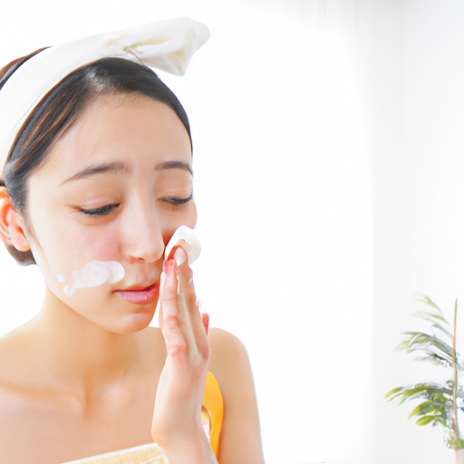

News
Skin care tips
Skin care tips
Cleansing Techniques
Moisturizing Methods
Sun Protection
Skin Type-Specific Tips
Skin Type-Specific Tips
Oily Skin Management
Dry Skin Solutions
Combination Skin Care
Anti-Aging Strategies
Anti-Aging Strategies
Wrinkle Prevention
Collagen Boosting Treatments
Antioxidant Use
What is the Best Daily Skincare Routine?
Sep 24, 2024
Finding the best daily skincare routine can feel like a daunting task with the plethora of products and advice available.. However, a simple yet effective regimen can work wonders for maintaining healthy, glowing skin.
What is the Importance of Sunscreen in Skincare?
Sep 24, 2024
The Importance of Sunscreen in Skincare In the ever-evolving world of skincare, trends come and go, but some truths remain steadfast.. Among these immutable principles is the critical importance of sunscreen.
What is Hyaluronic Acid and How Does It Benefit Your Skin?
Sep 24, 2024
Hyaluronic Acid, often abbreviated as HA, has become a buzzword in the beauty and skincare industry.. Yet, despite its popularity, many people remain unsure about what exactly it is and how it benefits the skin.
What is the Difference Between Dry and Dehydrated Skin?
Sep 24, 2024
Understanding the Difference Between Dry and Dehydrated Skin Skin care can sometimes feel like navigating a maze of terms and products, each promising to solve our skin woes.. Among the myriad of skin conditions, two that often cause confusion are dry skin and dehydrated skin.
What is Retinol and Why Should You Use It?
Sep 24, 2024
Retinol: The Skincare Game Changer You Need to Know About If there's one buzzword that has taken the skincare world by storm, it's "retinol." This ingredient often hailed as a miracle worker, seems to be on everyone's lips - from dermatologists to beauty influencers.. But what exactly is retinol, and why should you consider incorporating it into your skincare routine?
What is a Chemical Peel and How Does It Improve Skin Texture?
Sep 24, 2024
A chemical peel is a dermatological procedure that has gained significant popularity for its ability to enhance skin texture, tone, and overall appearance.. This cosmetic treatment involves the application of a chemical solution to the skin, which causes it to exfoliate and eventually peel off.
What is the Role of Antioxidants in Skincare Products?
Sep 24, 2024
Antioxidants have become a buzzword in the realm of skincare, touted as miraculous ingredients capable of transforming our skin health.. But what exactly do antioxidants do, and why are they so crucial in skincare products?
How to Achieve Flawless Skin: 5 Secrets Dermatologists Won’t Tell You
Sep 24, 2024
Achieving flawless skin is a dream that many of us cherish, yet it often feels elusive despite our best efforts.. We spend countless hours and dollars on various skincare products and treatments, hoping to unlock the secret formula for perfect skin.

How to Transform Your Skin Overnight with These Simple Tips
Sep 24, 2024
How to Transform Your Skin Overnight with These Simple Tips In our fast-paced world, who doesn't dream of waking up to radiant, glowing skin?. While achieving perfect skin overnight might seem like a tall order, it’s actually quite attainable with the right routine.
How to Get Rid of Acne Forever: The Ultimate Guide
Sep 24, 2024
How to Get Rid of Acne Forever: The Ultimate Guide Acne—it's the unwelcome guest that shows up uninvited and refuses to leave.. Whether you're a teenager grappling with hormonal changes or an adult dealing with stress-induced breakouts, acne can be a persistent and frustrating problem.
How to Make Your Skin Glow Naturally in Just One Week
Sep 24, 2024
Achieving a radiant, glowing complexion naturally in just one week might sound like a tall order, but with dedication and the right approach, it's entirely possible.. Your skin is your largest organ and reflects your overall health, so nurturing it from the inside out is key.
How to Reduce Wrinkles and Look Years Younger Without Surgery
Sep 24, 2024
As we age, it's natural to notice fine lines and wrinkles making an appearance on our skin.. While surgery is an option for some, many people seek non-invasive methods to reduce these signs of aging and maintain a youthful glow.
How to Build the Perfect Skincare Routine for Your Unique Skin Type
Sep 24, 2024
How to Build the Perfect Skincare Routine for Your Unique Skin Type Building the perfect skincare routine feels a lot like piecing together a complex puzzle.. The beauty industry offers an overwhelming array of products, each promising to be your skin’s new best friend.
How to Use Household Items for Stunningly Clear and Radiant Skin
Sep 24, 2024
Achieving stunningly clear and radiant skin doesn't always require a trip to the store for expensive beauty products.. Sometimes, the most effective skincare solutions are right under our noses—in our very own homes.
Daily Skincare Routine
Sep 24, 2024
A daily skincare routine is more than just a series of steps; it's an essential ritual that nurtures both your skin and your overall well-being.. In today's fast-paced world, taking a few moments each day to care for your skin can make a significant difference, not only in how you look but also in how you feel.
Anti-Aging Solutions
Sep 24, 2024
Anti-Aging Solutions: The Quest for Youthful Vitality Aging is an inevitable part of the human experience, a natural process that brings with it wisdom and maturity.. However, the desire to maintain youthful vitality has been a cornerstone of human aspiration for centuries.
Acne Treatment and Prevention
Sep 24, 2024
Acne Treatment and Prevention Acne, a common skin condition that affects millions of people worldwide, can be both physically uncomfortable and emotionally distressing.. It manifests in various forms, from mild whiteheads and blackheads to severe cystic lesions.
Hydration and Moisturizing Tips
Sep 24, 2024
Hydration and Moisturizing Tips In a world where beauty and wellness trends come and go, the importance of proper hydration and moisturizing remains a timeless pillar of skin care.. Our skin, the body’s largest organ, is constantly exposed to environmental stressors that can strip it of its natural moisture.
Natural and DIY Skincare Remedies
Sep 24, 2024
Natural and DIY Skincare Remedies In the hustle and bustle of modern life, many people are increasingly turning to nature for solutions to their skincare woes.. The allure of natural and DIY (Do It Yourself) skincare remedies lies not only in their simplicity but also in the promise of a more holistic approach to beauty.
Sun Protection and SPF
Sep 24, 2024
Sun Protection and SPF: Shielding Ourselves from the Sun's Rays The sun, with its radiant glow and life-giving warmth, has been both a friend and foe to humanity since time immemorial.. While it sustains ecosystems and provides essential vitamin D, prolonged exposure to its ultraviolet (UV) rays can have serious repercussions on our skin.